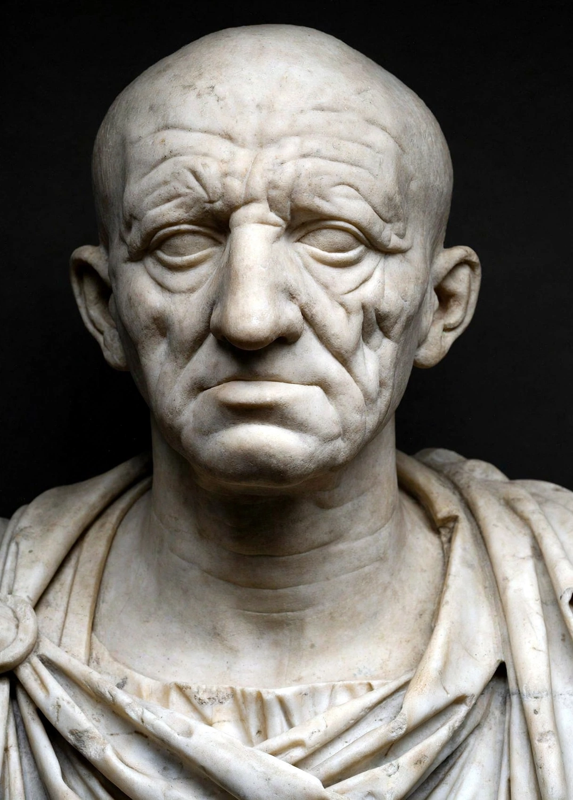

Marcus Porcius CatoMarcus Porcius Cato (234–149 BC), known as Cato the Elder and Cato the Censor, was a Roman soldier, senator and historian, and the first to write history in Latin prose. A novus homo from Tusculum, he rose through the cursus honorum to the consulship and a famously strict censorship.
Cato served in the Second Punic War, was quaestor in Sicily, praetor in Sardinia, and consul in 195 BC, campaigning in Hispania. As censor in 184 BC with Lucius Valerius Flaccus, he expelled senators for luxury and misconduct, becoming the archetype of austere Roman virtue and a champion of the mos maiorum against Hellenising fashions.
His De agri cultura (On Agriculture), a manual on running a slave-staffed estate, is the oldest surviving complete Latin prose work. His Origines, a history of Rome and Italy, survives only in fragments. Over 150 of his speeches were known in Cicero's day.
In old age Cato relentlessly urged the destruction of Carthage, reportedly ending every speech with the sentiment that Carthage must be destroyed; his advocacy helped bring on the Third Punic War, declared shortly after his death.